Specialty chemicals for disinfection, softening, descaling, coagulation,
antiscalant dosing and RO/UF membrane cleaning & preservation.
1. Disinfectants
Chlorination & microbiological control
Disinfectants inactivate bacteria, viruses, fungi and other microorganisms in
potable water, process water and distribution networks.
Chlorine 65 (Granular Calcium Hypochlorite) – Ca(ClO)2
with 65% available chlorine. Supplied as tablets and granules in 1 kg,
5 kg, 20 kg and 45 kg packs. Effective against bacteria, viruses,
yeasts, fungi, mycobacteria and spores. Widely used for borehole and tank
disinfection.
Regenerating DMI-65 iron & manganese removal media.
H2O Guard ≈ 1.5%, Bleach 3–5%, Hypoconc 10–12% active chlorine.
Sodium Metabisulphite (SMBS) – Na2S2O5
used for:
Preservation of RO & UF membranes during shutdown.
Dechlorination prior to RO membranes to prevent oxidation damage.
Chlorine 65
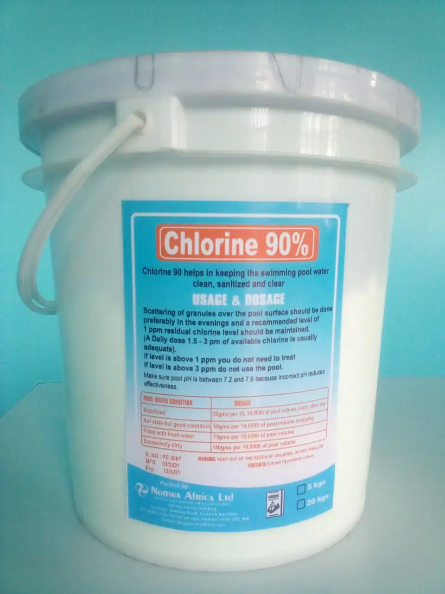
Chlorine 90SMBS
2. Softening & pH Control
Scaling control & resin regeneration
Used to soften hard water, regenerate ion exchange resins and maintain correct
pH for optimal treatment performance and corrosion control.
pH Minus & pH Plus – Supplied in 5 kg & 20 kg packs.
pH Minus – acid-based product for lowering pH and dissolving scale.
pH Plus – alkaline (sodium carbonate-based) product for raising pH and
boosting alkalinity.
Industrial Salt – High-purity NaCl for regenerating
cation-exchange softening resin in domestic and industrial softeners.
Caustic Soda (NaOH) – 20 L & 25 kg packs. Used to:
Increase pH for membrane cleaning (high pH CIP).
Regenerate strong base anion resins.
Clean drains and grease traps.
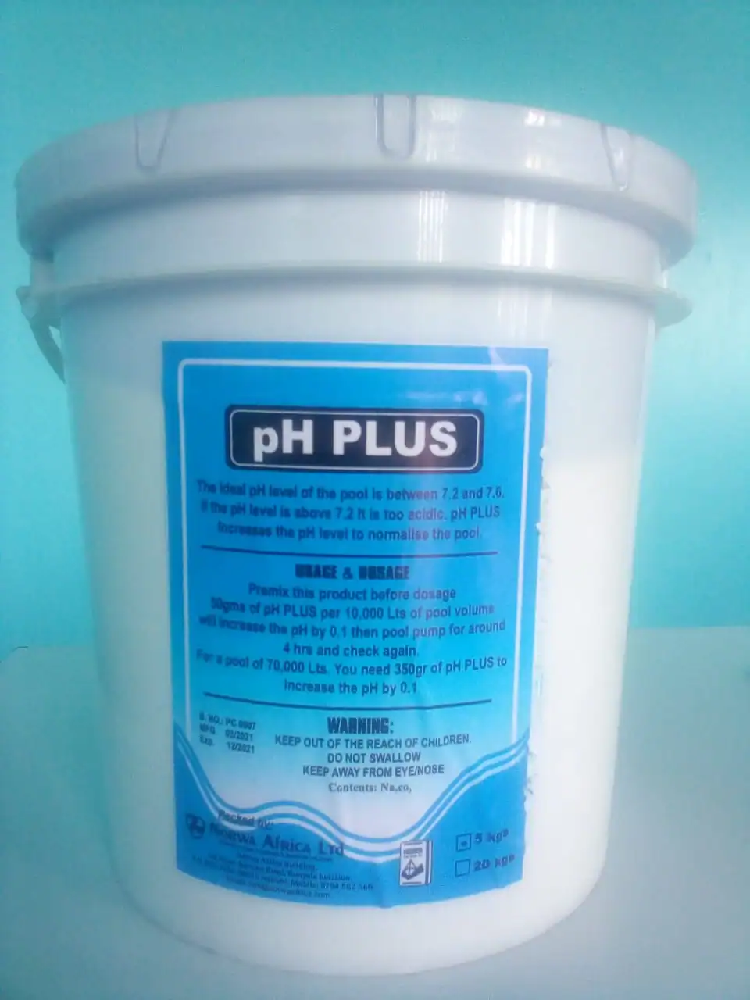
pH Control
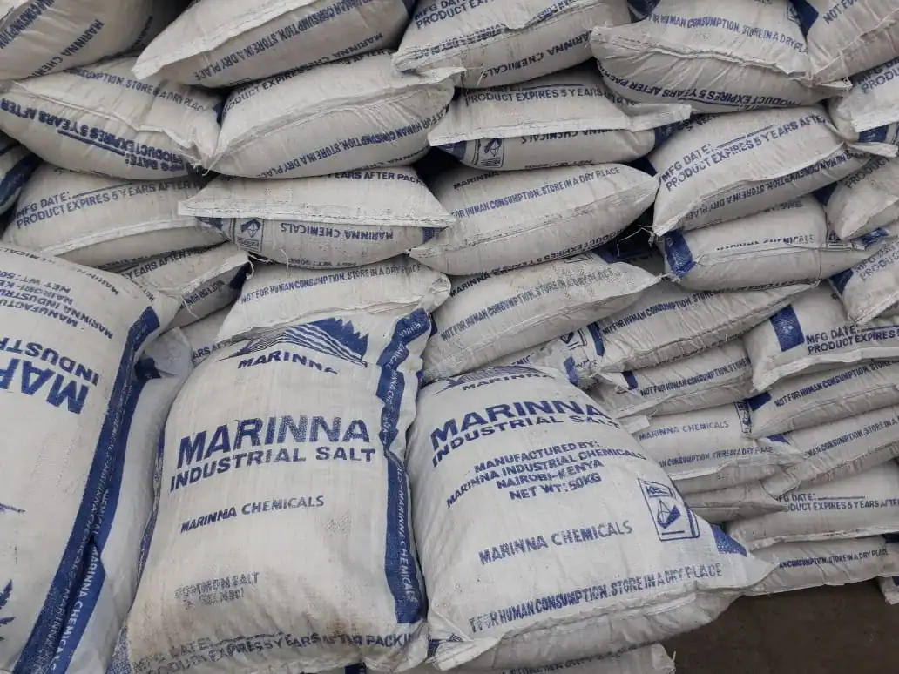
Indstrial Salt
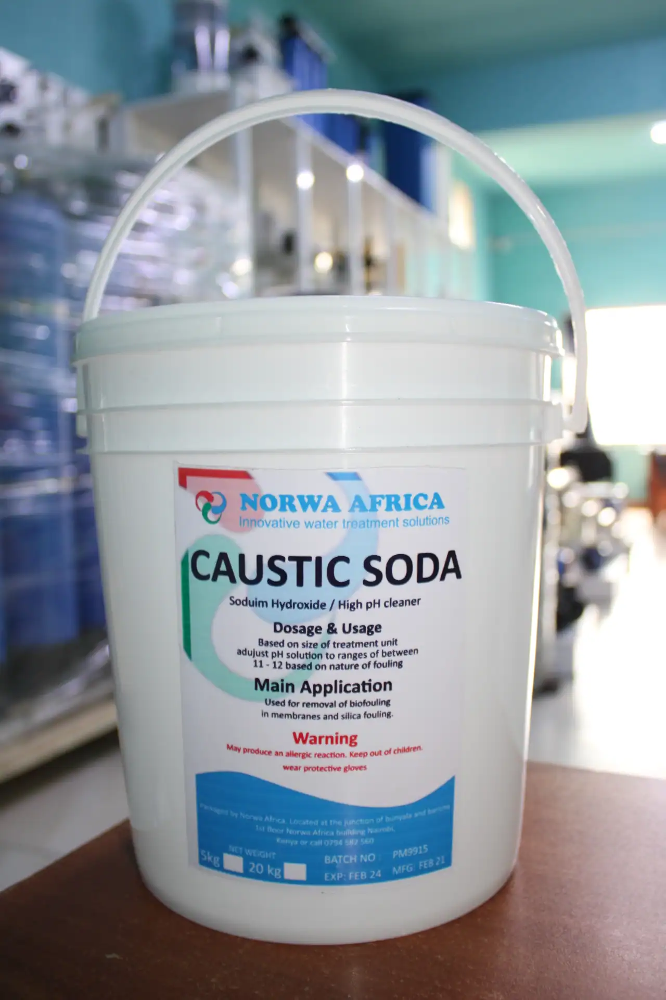
Caustic soda
3. Descaling & Membrane Cleaning
Low & high pH cleaning agents
Descalants and membrane cleaners remove inorganic scale, organic deposits and
biofouling from boilers, heat exchangers and RO/NF/UF membranes.
Kleen MCT511E – High pH liquid formulation designed to remove
organics, silt and particulate deposits from polysulfone, fluorocarbon and
polyamide thin-film composite RO/UF membranes.
Kleen MCT882 – Low pH formulation specifically designed to
remove calcium carbonate and other inorganic scales from RO, NF and UF
membranes, while also helping remove organic fouling.
Citric Acid – Organic acid cleaner:
Used as a mild descalant in steam generators, boilers and heat exchangers.
Acts as a low pH adjuster in water treatment.
Descolont – Inhibited HCl-based descaler in 5 kg & 20 kg
packs for removing limescale from hot water circuits (boilers, heaters,
exchangers). The inhibitor minimises metal corrosion.
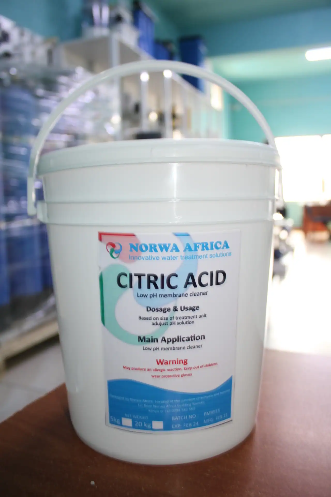
Citric AcidCaustic Soda
4. Coagulation & Flocculation
Pre-treatment & turbidity reduction
Coagulants and flocculants aggregate fine suspended solids into larger flocs
that can be removed by sedimentation or filtration.
Aluminium Sulphate (Alum) – Hydrated aluminium sulphate in
5 kg, 20 kg and 50 kg packs for turbidity reduction and colour
removal in conventional treatment plants.
Polyaluminium Chloride (PAC) – 25 kg packs, a high-performance
coagulant widely used in potable and wastewater treatment and for
regenerating fluoride removal media (e.g. Indion RS-F).
Genefloc GPF – General purpose flocculant:
Improves performance of RO pre-filtration (cartridge and multimedia).
Ideal for surface, well & process waters with medium–high SDI.
Dosed continuously at 1–4 mg/L with at least 5 minutes contact time before filtration.
5. Antiscalants
RO & NF scale control
Antiscalants inhibit precipitation of sparingly soluble salts on membrane
surfaces, allowing higher recoveries and longer run times between cleanings.
Low Silica Antiscalants – For standard brackish waters where silica
is moderate; prevent CaCO3 and sulphate scaling.
High Silica Antiscalants – For high-silica feeds to prevent silica
and silicate fouling, allowing higher recovery without scaling.
Hyperseparate / Hyperseperse-type Antiscalants – Versatile liquids
suitable for both high and low silica, depending on dilution and dose.
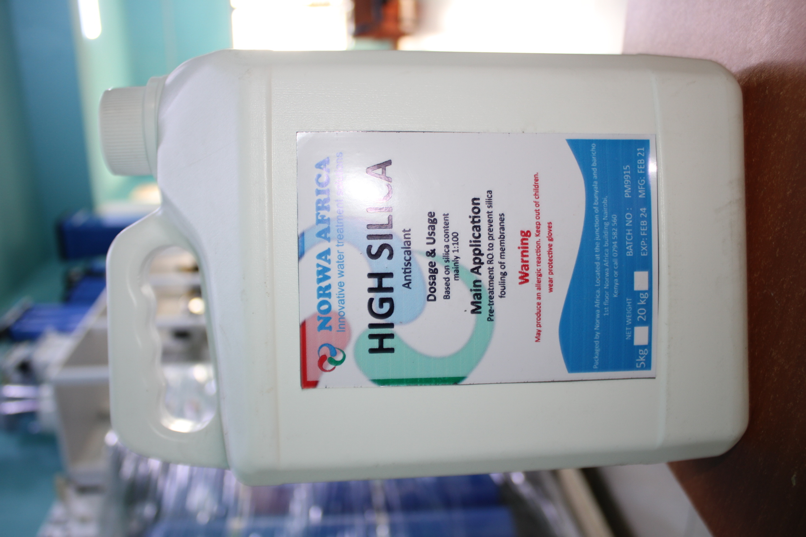
High Silica Antiscalants
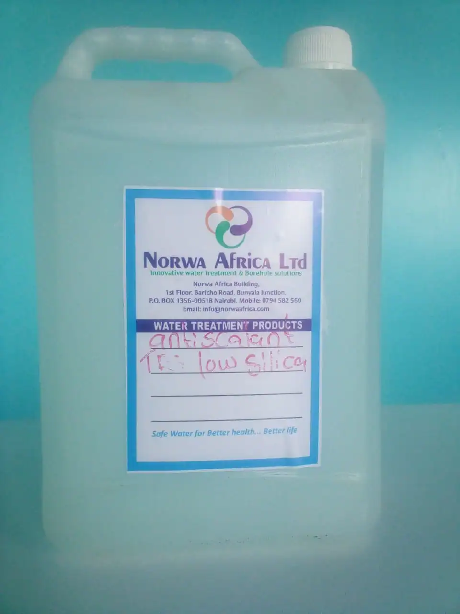
Low Silica Antiscalants
6. Genesys & Genesol Range
Specialised RO membrane cleaners & antiscalants
Genesys/Genesol products provide targeted cleaning and antiscalant solutions
for RO and NF systems, addressing inorganic scale, iron, organic fouling and
microbiological growth.
Genesol 37 – Strongly acidic cleaner.
Application: Low pH membrane cleaning for inorganic scales & iron.
Use: 1–2% solution, soak/recycle 1–2 hours.
Genesol 38 – Inorganic scale & iron deposit remover.
Use: 3–4% solution, soak/recycle 4–6 hours.
Genesol 701 – Low pH cleaner for stubborn inorganic scaling and iron
salts in RO/NF membranes.
Genesol 703 – High pH cleaner for organic foulants.
Targets aluminium silicate and organic deposits.
Use: 1–2% solution at max allowable pH, 4–6 hours, preferably warm.
Genesol 704 – High pH cleaner for organic fouling & biofilm.
Effective against bacteria, fungi, algae and aluminium silicate.
Use: 1–2% solution, soak/recycle 2–4 hours.
Genesol 32 – Biocidal cleaner & preservative.
Off-line: 1000–1500 mg/L for 6–8 hours.
Online: 700–1000 mg/L for 8–12 hours every 5–21 days.
Used in pre-treatment systems as well; deactivated with sodium bisulphite.
Genesys LF – Broad spectrum antiscalant.
Prevents CaCO3, iron and silica scaling.
Dose: 2–5 mg/L, continuously upstream of cartridge filters.
Genesys SI – High-silica antiscalant.
For high silica feeds and mixed scaling (CaCO3, Ca/Ba/Sr sulphate).
Dose: 2–5 mg/L.
Genesys RC – Antiscalant for small & recycling RO plants (<100 m³/day).
Prevents all common inorganic scales.
Dose: 7–15 mg/L, continuously upstream of cartridge filters.
Filtration Media
Engineered media for iron & manganese removal, softening, organic/chloride
reduction and sediment filtration in pressure vessels and multimedia filters.
1. Iron Removal Media
DMI-65, Katalox Light, Greensand/Birm
Iron and manganese removal media use catalytic oxidation and filtration to
convert dissolved metals to filterable solids.
DMI-65 – Silica sand–based catalytic media that uses oxidation,
adsorption and filtration to remove iron, manganese and other impurities.
Regenerated/activated using sodium hypochlorite.
Katalox Light – Lightweight manganese dioxide–coated media
(≈66 lb/ft³). Operates in pH 5.8–10.5 with a typical life of 7–10 years.
Recommended for up to ~15 ppm iron.
Greensand or Birm – Manganese oxide–coated media providing
oxidising environment and filtration.
Greensand is regenerated with potassium permanganate or chlorine.
Works best at pH > 7.5.
Common where iron is <10–12 ppm and large volumes are treated.
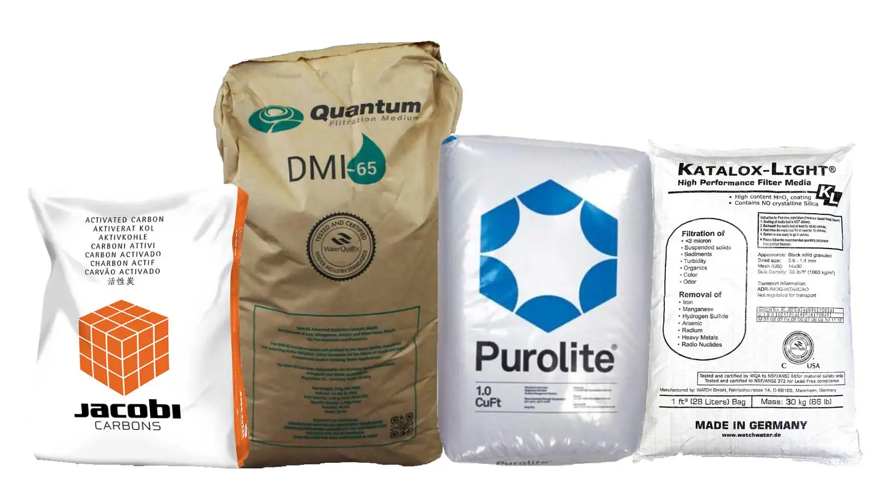
DMI-65
2. Water Softening Media
Cation & anion exchange resins
Ion exchange resins remove hardness and specific ions by exchanging them for
sodium or other benign ions.
Resin – Cation – Strongly acidic polystyrene bead gel with
sulfonic acid functional groups, used for hardness removal (Ca²⁺, Mg²⁺).
Resin – Anion – Strong base polystyrene bead gel resin used for
nitrate, chloride and other anions, or in demineralisation trains.
Ion resin exchangeAnion resin
3. Organic & Chloride Removal Media
Catalytic granular activated carbon (GAC)
Specialised carbons remove organic contaminants, residual chlorine and
heavy hydrocarbons from process and condensate streams.
Catalytic Granular Activated Carbon
Removes organics, taste & odour compounds and residual chlorine.
Special acid-washed grades are designed to remove heavy hydrocarbons
from recovered condensate.
Acid washing removes soluble silica to prevent leaching into
condensate or feed water.
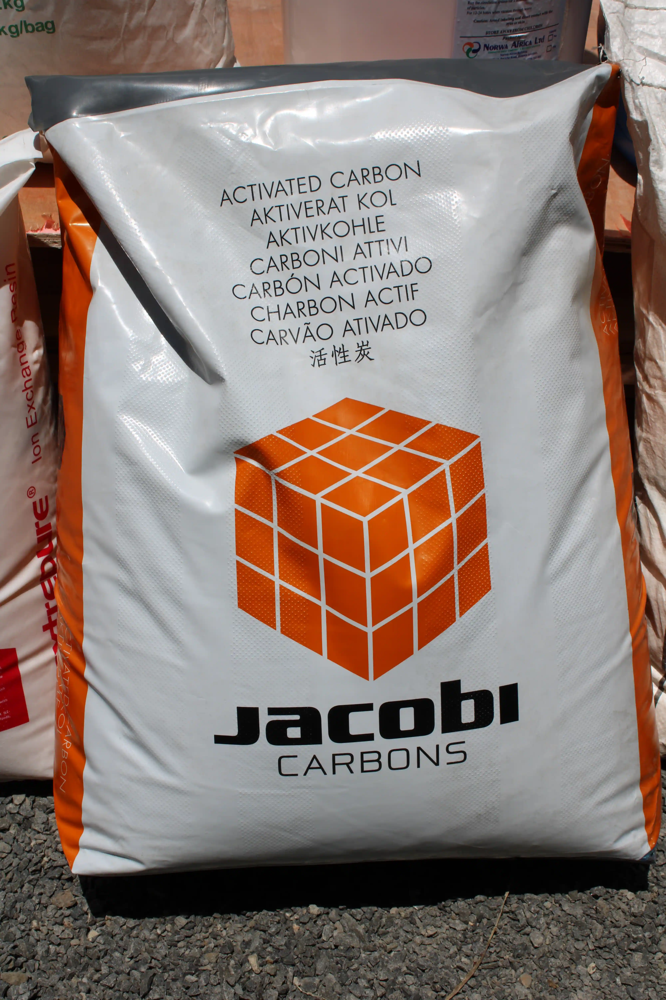
GAC mediaGlass Stock
4. Sediment Removal Media
Sand & glass media
Inert granular media used as primary or polishing filtration for turbidity and
suspended solids removal.
Silica Sand Media – Graded silica available in various grain
sizes for multi-layer filters, rapid sand filters and backwashable vessels.
Glass Media – Environmentally friendly media produced from
recycled glass. Used as a higher performance alternative to sand with
improved backwash and lower biofilm formation.
Silica sandGlass media
Accessories
Structural FRP vessels, chemical tanks and brine tanks that complete water
treatment skids and plant layouts.
1. FRP Tanks
Pressure vessels for filters & softeners
FRP (Fiberglass Reinforced Plastic) tanks are lightweight, corrosion-resistant
pressure vessels ideal for residential and light commercial applications.
Ideal for softeners, multimedia filters, carbon filters and specialty media.
Available in a wide range of diameters and heights.
Standard polyester or chemical-resistant vinylester options.
Easy to handle, transport and install on site.
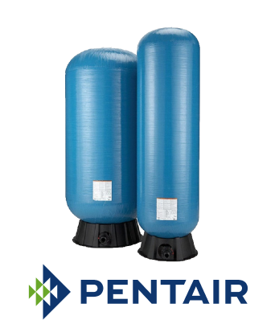
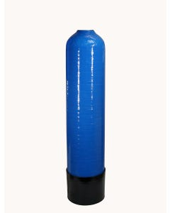
2. Chemical Tanks
Storage for liquid chemicals
Chemical storage tanks are used for holding dosing chemicals such as
antiscalants, coagulants, chlorine solutions and membrane cleaners.
Available in multiple capacities (e.g. 50 L, 100 L, 200 L, 500 L+).
High chemical resistance and UV stabilised materials.
Provision for level indicators, suction lances and mixer mounting.
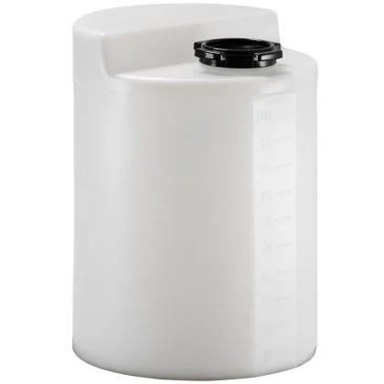
2050L100L200L500L
3. Brine Tanks
Salt storage for softener regeneration
Brine tanks hold salt and brine solution for automatic regeneration of water
softeners, ensuring consistent hardness removal.
Compatible with domestic, commercial and industrial softeners.
Various footprints and heights to match site space and resin volume.
Equipped with salt grids and brine wells for stable operation.
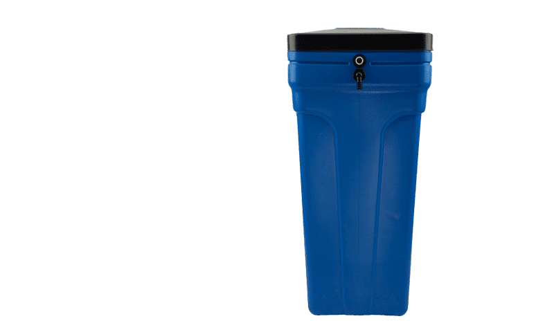
Chemical Dosers
Precision dosing equipment for disinfectants, antiscalants, coagulants and other
water treatment chemicals.
1. Dosing Pumps
Steady, energy-efficient metering
Solenoid-driven or motor-driven dosing pumps provide accurate chemical
injection proportional to flow or time, maintaining stable treatment levels.
Steady dosing performance – Solenoid draws only the power
required under current process conditions, improving efficiency.
Stable output – Performance is not affected by supply
voltage fluctuations.
Simple interface – Self-explanatory menus available in multiple
languages with clear function-based parameters.
Intelligent display – Once a function is selected, the pump
only shows the relevant parameters for that mode.
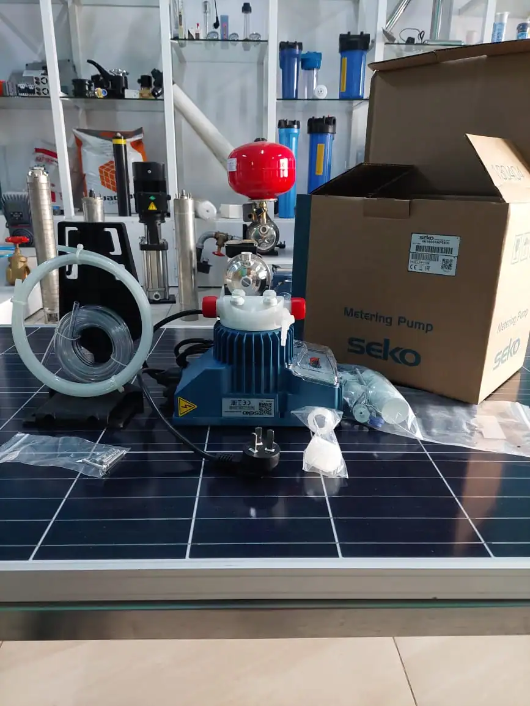
Dosing pump
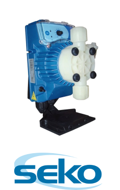
Dosing skid
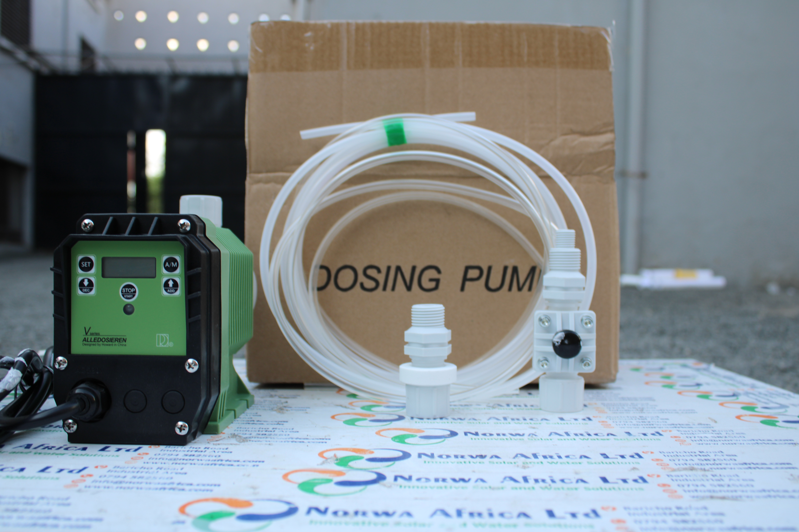
Programming
2. Klorman Inline Disinfection
Point-of-use in-line chlorination
Klorman is a simple in-line disinfection system that uses a compacted calcium
hypochlorite cartridge to release active chlorine into the water stream.
Designed for point-of-use or small system chlorination.
Dosage adjusted by projecting the cartridge further into the flow path.
Capable of up to 500 m³ at 1 ppm with no chlorine demand (capacity
depends on site conditions).
Max flow rate: 16 m³/h; operating pressure: 0.5–6 bar.

 Chlorine 65
Chlorine 65
 SMBS
SMBS
.webp)